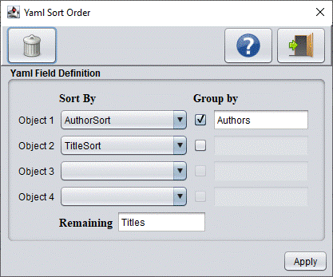

YAML Sort Order
YAML is a human-readable data-serialization language. It is commonly used for configuration files and in applications
where data is being stored or transmitted. It uses both Python-style indentation to indicate nesting, and a more compact
format that uses [...] for lists and {...} for maps.

Buttons
Button
Description
Clears all sort fields
Shows this help screen
Exits this screen
Apply
Apply the changes made on this screen
YAML Field Definition
Objects
In this screen you can sort up to 4 different objects. If you've defined the same object on the "Export Fields" tab, the
program will use the field header instead of the field name itself.
Group by
If you not only want to sort the objects, but group them as well together under a certain name. You can activate the checkbox
that follows the sorted object fields. Optionally, you group them by the name you'd specify in the text field next to it.
In the example above, I've sorted my books by Author with Authors as group name. If the name field is left blank, the program
uses the same name as the sorted object field.
Remaining
Normally the last object to be sorted should be unique for each record. If there are duplicates then the program will group
the remaining fields to be exported under the name you specify here in this field. If you leave it blank then "Values" will
be used as default.